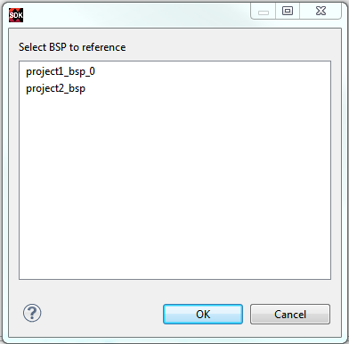

Re-Targeting a Software Project To re-target your software project: SDK lists the BSP projects available in the workspace. Right-click the application project in the Project Explorer view and select Change Referenced BSP. SDK lists the BSP projects available in the workspace. Select the project to re-target.  Click OK. SDK re-targets your application project to the new BSP project and the new hardware project and starts re-building the project. Related concepts SDK Application Projects Auto-Synchronizing Software Projects Filtering Projects Building Projects Debugging Projects Running Projects Sharing and Archiving Software Projects Related tasks Creating a Library Project Using Custom Libraries in Application Projects Creating a Zynq Boot Image for an Application